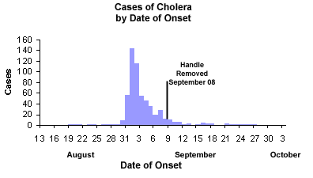
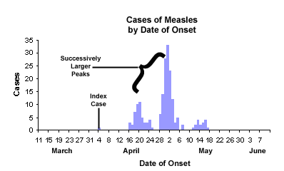
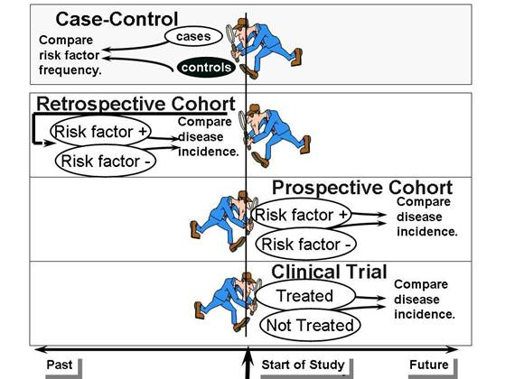

第16章 流行病学
16.2 早期疾病的概念
- 渔猎时期主要问题是食物的供应与营养均衡问题
- 农耕时期开始群居，出现疾病的流行问题
- 神秘主义，迷信与神的惩罚
- 希波克拉底：理性思考疾病起源，提出体液学说
- 欧洲流行300多年的黑死病，开始认为病因是“瘴气”，其实是老鼠跳蚤上细菌
- 没有验证病因与疾病关系的方法与预防措施
- 工业革命时期城市规模迅速扩大，分工细化，出现职业暴露健康问题
16.3 近代流行病学关键人物
- Girolamo Fracastoro (1546) 认为疾病来自种子
- John Graunt - The Bills of Mortality (1662) 记录伦敦死亡率，出生率数据并进行分析
- Anton van Leeuwenhouk (1670s) 显微镜之父，首先观察到细胞
- John Pringle and “Jail Fever” (1740s) 研究军队与监狱卫生与疾病并讨论了与伤寒的关系
- James Lind and Scurvy (1754) 进行了第一例临床控制实验，验证柑橘对坏血病的治疗作用
- Francois Broussais & Pierre Louis (1832) 提出放血疗法，没有验证但沿用几个世纪
- Ignaz Semmelweis and Oliver Wendell Holmes (1840s) 前者发现了某种产科疾病是由刚解剖完尸体的学生引入的，后者推行了疾病可能来源于医护人员的理念而饱受争议
- John Snow - The Father of Epidemiology (1850s) 流行病学之父，研究并验证了霍乱与城市供水的关系
- Louis Pasteur (late 1800) 提出巴氏消毒法与疫苗理论
- 公共卫生的概念 (1850-1875) 起源于人口统计及18世纪的启蒙运动例如功利主义的兴起对公众健康的关注
16.4 现代慢性病流行病学
- 肺癌：工业革命后的肺癌发病率很高，普遍认为是工厂公路导致，但后续研究表明吸烟可能是主要因素，该研究促进了病例对照研究的发展
- 佛雷明翰心脏病研究：48年起追踪心脏病研究，已持续三代人
knitr::include_graphics('images/Framingham1.jpg')
16.6 描述性流行病学
- 关注不同时间、地点、人群的差异、相似性与相关性，形成假说
- 案例：传染病暴发
- 早期关注案例采访，寻找共同点
- 对地理位置作图寻找空间关系
- 对时间趋势作图寻找变化规律
- 流行曲线：横轴日期，纵轴新增病例
- 点源爆发：单峰，潜伏期相对一致
knitr::include_graphics('images/epidemiccurve.jpg') - 持续源爆发：单峰，潜伏期持续出现
- 持续源爆发：单峰，潜伏期持续出现
knitr::include_graphics('images/EpidemicCurve_Cholera.png') - 逐步流行：多峰，存在人对人传染
knitr::include_graphics('images/EpidemicCurve_Measles.png')
16.6.1 疾病爆发的研究步骤
- 准备研究
- 验证诊断与爆发的存在
- 定义案例并寻找案例
- 进行描述性流行病学研究确定时间、地点与人群的差异
- 生成爆发原因与来源的假设
- 假设检验
- 制定控制与预防措施
- 交流研究发现
16.6.2 慢性病的描述性流行病学
- 人群特质：年龄，性别，种族，职业，饮食习惯，宗教习惯，业余活动等
- 地点：慢性病地域差距
- 时间：大趋势，季节性，片断性
- 其他：环境变化，诊断精度，医疗水平，人群年龄分布
16.7 分析流行病学
- 不同于描述流行病学提出假设，分析流行病学进行假设检验
- 队列研究：定义基线与风险人群
- 前瞻性队列研究：参与者参加的时候不出现健康效应
- 回顾性队列研究：根据已经出现的健康效应反向追查风险因子
- 临床实验：风险因子由研究人员指定
- 病例对照研究：不用来研究发病率，侧重风险比，不追踪，根据已有状况回溯，对幸存者采样，适合稀有病症的研究
knitr::include_graphics('images/paste_image47.jpg')
- 判断流程
- 是否个人（生态学研究）
- 是否有对照（系列案例）
- 是否追踪（断面研究）
- 是否不先选取出现健康状况的组（病例对照研究）
- 是否不出现健康状况（回顾队列研究）
- 是否指定对照组（前瞻队列研究）
- 临床实验
16.8 疾病监控
- 早期教堂记录出生率与死亡率
- 1662 John Graunt “Bills of Mortality”
- 1837 英国建立 General Registrar’s Office 记录市民出生、死亡与婚姻
- John Snow 对霍乱数据的分析
- 1842 马萨诸塞州开始记录出生死亡状况
- 1901 全美开始记录疾病流行状况
- 1925 强制执行疾病监控
- 目前基本是CDC控制，除了强制汇报，也有主动收集
- 综合疾控，不等确诊收集症状，例如google flu
16.9 疾病频率的测量
16.9.2 患病率（prevalence）
表示在指定时间里具有某种健康效应的人群比例，非新增
\[prevalence = \frac{affected individuals}{total individuals in the population}\]
举例：患病率0.25表示人群中有25%的人在指定的时间段里受某种健康效应影响
经常会导致因果推断不准，因为影响因素产生的效应被本来的效应覆盖了
knitr::include_graphics("images/paste_image18.jpg")
16.9.3 风险（risk）
也称作发病率（incidence或cumulative incidence），表示在一段给定时间里新增某种健康效应的比例
\[risk = \frac{new cases}{total individuals at risk}\]
举例：5年风险0.1表示在5年里某个个体有10%的几率出现某种健康效应
前瞻性研究（prospective studies）常用，但控制性研究（case-control studies）里总体风险无法确定，不能使用。
16.9.4 比率（rate）
也称作发病率比率（incidence rates）表示在一个人群中某种健康效应出现的速度。单位为每个人年，个人年表示风险个体参与研究到出现健康效应的总时间
\[rate = \frac{new cases}{total person-time at risk}\]
举例：0.1案例每个人年表示对于每10个人追踪1年或2个人追踪5年将会有一个案例出现
人群无限状态下，有
\[risk = rate \cdot time\]
考虑到人口的指数衰减，有
\[risk = 1 - exp(- rate \cdot times)\]
当风险率非恒定时，或者对时间分段计算，或者进行生存分析
人群出现稳态时，有
\[\frac{prevalence}{1-prevalence} = rate \cdot Avg.Duration\]
当患病率很低时，有
\[prevalence = rate \cdot Avg.Duration\]
疾病的持续期可计算为
\[Avg.Duration = \frac{prevalence}{rate}\]
16.10 联系测量
- 测定频率不涉及对比，探索关系需要对比
- 不同暴露状态下的频率差或者比表征
16.10.1 风险比与比率比（risk ratio rate ratio）
\[risk ratio = \frac{risk_{exposed}}{risk_{unexposed}}\]
\[rate ratio = \frac{rate_{exposed}}{rate_{unexposed}}\]
表示暴露与健康效应的关系强度，1表示无关，但比例关系不能给出绝对差异 表述风险比不要使用更多或更少，如果更多或更少需要减一除以风险比：相比不服用，服用阿司匹林有0.57倍的心肌梗死风险或43%的风险下降
16.10.3 风险差（risk difference）
\[risk = risk_{exposed} - risk_{unexposed} = \frac{cases in exposed group}{total at risk in exposed group} - \frac{cases in control group}{total at risk in control group}\]
正数表明对某种健康效应有促进作用，负数表示有抑制作用，要指明时间区段
16.10.4 归因比例（Attributable Proportion Among the Exposed）
\[attributable proportion = \frac{risk ratio - 1}{risk ratio}\]
暴露组风险中归因于该原因的比例
16.12 研究道德
- 无论目的如何，以人作为研究对象是不道德的
- 纳粹在二战期间集中营里使用人作为研究对象，1946年审批时提出Nuremberg Code：
Voluntary consent of the human subject is absolutely essential. The experiment must yield generalizable knowledge that could not be obtained in any other way and is not random and unnecessary in nature. Animal experimentation should precede human experimentation. All unnecessary physical and mental suffering and injury should be avoided. No experiment should be conducted if there is reason to believe that death or disabling injury will occur. The degree of risk to subjects should never exceed the humanitarian importance of the problem. Risks to the subjects should be minimized through proper preparations. Experiments should only be conducted by scientifically qualified investigators. Subjects should always be at liberty to withdraw from experiments. Investigators must be ready to end the experiment at any stage if there is cause to believe that continuing the experiment is likely to result in injury, disability or death to the subject.
16.13 临床实验
- 分为预防性与治疗性干涉研究
- 新药研发的四阶段
- 8-80人小规模评价安全性，副作用及副作用出现的剂量
- 80-200人中等规模测试有效性，副作用及与剂量的关系
- 200-40,000人大规模测试其与当前治疗方式的副作用强度
- 推向市场后的监测，测试罕见但严重的副作用，例如H1N1疫苗
16.13.2 对照组与控制组
- 排除混杂因素需要考虑除考察因素外其他因素在研究客体中分配均匀
- 分配方法包括自我前后对比与随机非随机分配
- 屏蔽
- 单盲：被试不知道是否是处理组
- 双盲：研究人员与被试都不知道处理组
- 三盲：进行处理的人也不知道是否是处理组
- 安慰剂（placebo），也就是无效药
- 装假（sham），假装进行某个操作流程（有道德风险）
- 安慰剂效应：接受治疗的人都认为会从中收益，即使知道是安慰剂也会产生该效应
- 服从度，处理组与控制组要区分明显，内部一致
- 设计尽量简单
- 被试生活规律
- 通知明确
- 实时追踪
- 屏蔽处理信息
- 对不服从的仔细询问，收集未使用药片，收集血液尿样进行评价
- 掉队会导致功效降低及存在偏误
16.14 队列研究
16.14.1 前瞻性队列研究
- 研究开始时没病，记录基线，追踪个人
- 案例：BMI与心脏病关系
16.14.2 回顾性队列研究
- 适合职业暴露，回溯暴露状况
- 案例：游泳池污染事件
16.15 病例对照研究
- 现有案例，后回顾暴露状态，两者在研究前是独立的
- 适用于稀有疾病，只能计算胜率比而不能计算风险比
- 经常内置于已有的队列研究，适用于稀有疾病假设
- 当研究对象为人群而不是队列研究中的未发病人群时，允许发病者作为控制组
- 案例：DES与子宫癌
- 病例来源：住院病人、死亡证明、死亡注册、断面研究
- 对照来源：代表群体的组、独立采样且采样策略一致避免代表性丧失
- 随机电话访问是之前一种选择对照的方法，由于存在偏误（无法区分居民与商业电话，固定电话使用率降低）而逐渐被替代
- 对照组的数量选择要考虑统计功效
- 采样方法：幸存者采样，基于队列采样（按队列开始时风险人群），风险组采样（出现案例时存在风险的人群）后两种可以不考虑稀有假设，因为他们对照可代表整体，胜率比可用来估计风险比
- 优点：对罕见病高效，节约成本，可动态研究
- 缺点：选择偏误，对罕见暴露低效，不能计算风险
16.16 标准化
- 粗比率（crude rates）忽略了人群组成差异，需要调整
- 死亡率上如果两组中有一组老年人占总体比率高，那么会使两组风险比较时有偏差
- 用整体人群作为基础分布，比率乘各分组人数之后求和得到标准比率，其实质是将各分组年龄分布归一来消除年龄偏误
- Standardized Incidence Ratios 标准发病率用整体发病概率作为基准，计算各分组发病人的期望值并对比观察值
16.17 混杂
- 混杂因素是同时对暴露与结果产生影响的因素，例如唐氏综合症研究中出生的顺序其实对病症无影响，孕妇年龄为该研究的混杂因素
- 混杂因素判据：对暴露与结果都有影响；在暴露组间分配不均；不能是暴露与结果的中间步骤（饮酒通过升高HDL来降低心血管病发病率，HDL与两者相关但不是混杂因素）
- 混杂因素可能是另一个风险，也可以是预防因素，也可以是其他替代物
- 残差混杂表示在排除混杂因素后由于排除不全或分类错误或未知导致的混杂
- 现象或禁忌混杂，暴露与结果实际受结果的反馈影响，例如抗抑郁药与绝育的关系中抑郁本事会对绝育产生影响，这样在观察研究中不易区分
- 因果互换，例如母乳对婴幼儿有益，但有研究发现母乳可能造成营养不良，但后来人们发现其实是因为调查人群中婴儿出现体重偏轻或腹泻的家庭往往会停止使用母乳喂养，案例；另一个案例是止痛药与肾衰的研究中并非服用止痛药导致肾衰而是因为糖尿病多导致肾衰而糖尿病人经常服用止痛药
- 研究设计中防止混杂可通过限制研究人群，个体匹配与随机化实现
- 数据分析中混杂控制－分层，例如年龄分组后原有差异可能就消失
- 多分层方法可采用CMH方法计算风险比，其实就是对分组比率加权来忽视分组因素的影响，影响因素多要采用多元分析
16.18 效应修饰（EMM）
- 指由于另外的变量导致效应分类的状态，例如年龄可能造成某种药药效相反，可理解为线性模型中的交互作用项- 测定有混杂因素与无混杂因素下的两个风险比，如果差异很大且差异区间包括原始风险比，则存在修正测量效应；如果差异不大但影响原始风险比，则要同时考虑混杂因素；如果两者同时存在，则要考虑分层讨论混杂的情况
- 存在EMM时不能使用CMH方法，因为此时样本不适合混合，应该分层讨论，可用卡方检验EMM的存在与否
- 统计交互作用与生物学的交互作用需要区分
16.20 筛选
- “detectable pre-clinical phase”或DPCP表示在筛选与有症状后检测之间的时间
- 筛选的价值（高血压中测血压）
- 疾病很严重（子宫癌）
- 症状发生前的治疗效果要比发生后好
- DPCP疾病流行概率很高
- 筛选的限制
- 胆结石中预先检测对治疗没意义，都是大了以后手术去除
- 肺癌中检测到了也无法有效治疗
- 疾病不流行
- 好的筛选应具有的标准
- 便宜
- 容易操作
- 最小化不适
- 可靠
- 有区分
- 测试验证
- 灵敏度（真阳性占阳性比例）
- 特异性（真阴性占阴性比例）
- 真阳性预测值（真阳性占阳性比例）这个值会随流行度变化而变化，即使灵敏度特异性都高，较低的流行度也会降低预测准确性，所以测试要针对易感人群并计算流行度
- 真阴性预测值（真阴性占阴性比例）
- gold standard “金标”
- ROC曲线 左上方靠近
- 多数情况可以接受假阳性而提高灵敏度
- 前列腺癌筛查的案例
- 测试本身的缺点
- 评估筛选中需要注意的偏误
- 宫颈癌，乳腺癌也在常见筛选之中
16.21 因果推断
因果推断在流行病学中很重要，但目前没有标准来界定因果而仅仅有一些指南。
16.22 论文研读
- 科研论文类型包括原始研究（描述性与分析性）、方法、荟萃分析与评论
- 文章结构包括题目、作者、摘要、前言、方法、结果、讨论、结论、致谢、文献引用与图表
- 依次浏览摘要（概况），前言（问题的重要性），讨论（看结论与意义），方法（看实验设计），结果（看图表）并记录疑点
16.22.1 Introduction
- What was the primary question that the authors were trying to answer? Why were they asking this? Rationale? What was their goal?
16.22.2 Methods
- What type of study design was used?
- Was this a logical choice, given the goals of the study?
- What are the weaknesses of this study design?
- What problems and biases might have occurred?
- How were subjects identified and enrolled? How successful was enrollment?
- Could selection bias have occurred as a result of control selection bias, or differential non-participation in a case-control study?
- Did selection of controls meet the “would” criterion?
- If it was a cohort study, how complete was follow up
- How carefully was the exposure of interest defined?
- How was the exposure assessed?
- What was the quality of the exposure data?
- Was exposure data validated?
- How carefully was the outcome of interest defined?
- How was it assessed? Was it validated?
- Could selection bias have affected the results?
- What was the potential for information bias?
- Non-differential misclassification? Errors in recording or coding of data? General inability of subjects to remember?
- Differential misclassification? Recall bias? Interviewer bias? Recorder bias? Differential quality of data?
- What were the likely confounding variables?
- Did the authors control for confounding in the design of the study, in the analysis, or both?
- Did they fail to account for any potentially important confounders? Was control of confounding adequate? Could there have been residual confounding?
- Did they perform stratified analysis? Did they use regression analysis?
- Would these problems bias toward the null or away from the nul?
16.22.3 Results
- Do the results suggest an association?
- If so, how was it assessed, and how strong was the association?
- Did the authors estimate risk ratios or risk differences?
- How precise were the measures of association? Was the sample size adequate? Did the authors report confidence intervals? p-values?
- Did the authors adequately assess random error?
16.22.4 Discussion
- Was the interpretation appropriate?
- Are the results of this study consistent with other studies in this area? If there are differences with other study findings, what could they be due to?
16.22.6 Clinical Trial
- Were patients randomly assigned to the comparison groups?
- Was the study blinded? Did the patients or doctors know which group the patient was in?
- Was the randomization effective in creating two groups which were similar with respect to age, gender, race, and other potentially confounding variables?
- Did patients adhere to the treatment? Did patients drop out?
- Were appropriate statistical tests used to compare the groups?
- Were the groups analyzed based on their randomized assignment, i.e. a so-called “intention to treat analysis”
- Was the sample size large enough to detect a meaningful difference if it had existed?
16.22.7 Cohort Study
- How did they select the subjects in the comparison groups? Were the groups comparable with respect to other factors?
- How did they ascertain risk factor status? Was the data accurate?
- Could there have been bias?
- How complete was the follow up data?
- Was the statistical analysis appropriate?
- Did they control for possible confounding variables?
- Was the sample size adequate to detect clinically important differences if they existed?
16.22.8 Case-Control Study
- What was the source population? How were cases and controls defined?
- Was there selection bias? Was the ‘would’ criterion met?
- How was information collected? Was it accurate? Was it collected in a comparable way in both groups?
- Could there have been recall bias?
- Interviewer bias?
- Was the statistical analysis appropriate?
- Did they control for possible confounding variables?
- Was the sample size adequate to detect clinically important differences if they existed?
16.22.9 Screening Test
- If so, did they have an independent blind comparison with a reference diagnostic technique, i.e., a “gold standard”?
- Was the diagnostic test evaluated in an appropriate group of patients, similar to those you would find in your practice?
- Did they address the ability of the test to discriminate between normal and abnormal? How was abnormality defined? Did they calculate sensitivity and specificity or likelihood ratios or report their data in such a way that you could calculate them?